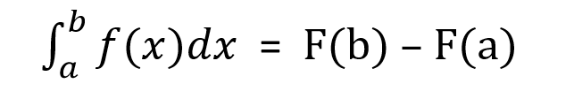

Integral
[a; b] kesimde üznüksiz bolan (otrisatel däl bolmagy hökman däl), islendik f funksiýa
üçin n → ∞ bolanda Sn
ululyk käbir sana ymtylýar.
Şu sana f funksiýanyň a-dan b çenli aralykdaky integraly diýilýär.
a we b sanlara integrirlemegiň predelleri diýilýär: a – aşaky, b – ýokarky predeli,
∫ belgä integral belgisi diýilýär. f funksiýa integral aşagyndaky funksiýa, x – üýtgeýän ululyga bolsa integrirlemegiň üýtgeýän ululygy diýilýär.
Nýuton-Leýbnisiň formulasy
Egriçyzykly trapesiýanyň meýdanynyň
Eger [a; b] kesime f üçin F asyl funksiýa bolsa, onda:
